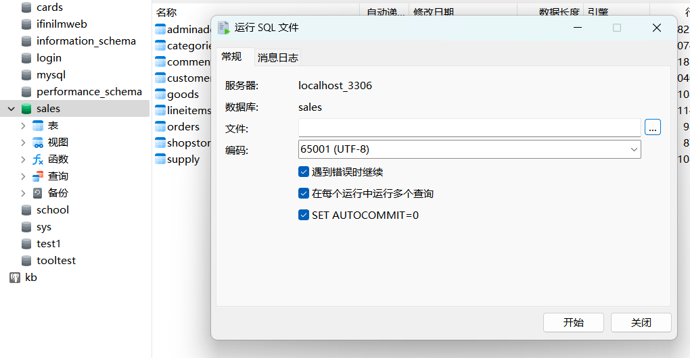

数据迁移
本部分预计记录将金仓里的数据迁移至 MySQL 的流程。
本节目录
大体流程介绍
由于我们完成了将数据导入金仓数据库的部分，所以，下面的问题就演变成了，我们要把数据从金仓数据库迁移至 MySQL 数据库。
数据迁移的大体流程就是，先将数据导出成 sql 脚本，再使用目标数据库的 sql 引擎执行 sql 脚本，以此实现导入。
但由于数据库之间的差异，我们需要对 sql 脚本进行一些适配性修改，以使其能在 MySQL 中正常运行。
所以，虽然此节顺序是 导出 -> 修改 -> 导入，但实际我的操作过程中是 导出 -> 开始迭代 -> 导入 -> 报错后并修改 -> 删掉数据库。
数据导出
背景
金仓数据库提供了导出工具，但是，我们课程资料包里的数据是哪来的？估计就是用这个工具导出来的。而这个工具导出出来的 sql 脚本是不能被直接执行的，原因是导出的 sql 是基于金仓的 sql 引擎的，而我们的目标数据库是 MySQL，所以，我们需要对导出的 sql 脚本进行一些修改。
而由于数据量过大，如果直接对此脚本进行修改的话，工作量太大，所以选择通过数据库连接工具提供的导出方式进行导出。
Navicat 导出流程
- 右键要导出的数据库，选择
导出向导： - 选择导出类型为
SQL 文件，然后点击下一步，之后我们点击左下角的全选，然后再点击全选旁边的下拉按钮，选择导出已选择的到相同文件(图里面的是还没点击导出已选择的到相同文件的样子)：
- 然后继续点击下一步，最后点击
开始:

适配性修改
PS：这部分，如果有课程资料包，则不需要再做，这部分是记录了我的操作过程。
1. 修改列名和表名
我导出的 sql 脚本，起的名字是 all.sql，观察直接导出的内容，可以发现大体形如：
INSERT INTO "adminaddrs" ("addrid", "stdcode", "addrname", "parentid", "currlevel") VALUES ("1", NULL, "阿富汗", 1, 0);
/* ... 其他的内容省略了 ... */
熟悉 mysql 的同学应该知道，mysql 的表名和列名在使用时是不能用双引号的，所以，我们需要将所有的双引号替换成 反引号(电脑键盘左上角的 Esc 下面) 。
在这一步，我是使用的 vscode 的替换来做的，这也为下面的一个问题的产生，带来了隐患。
2. 为 DDL.sql 做适配
当直接执行我们修改完的数据脚本时，会报错，报错日志说 找不到数据库，那显而易见，我们还没有创建数据库，所以，我们需要先创建数据库，再执行脚本。那我们就需要先运行我们之前用的 DDL.sql 脚本。
当直接执行 DDL.sql 时，会报错，经过分析，因为金仓作为分析型数据库，其变量类型和 MySQL 的变量类型不同，所以需要做一大批的修改，如下所 示：
- @Diff:
-
- MySQL 的
schema与database相同含意, 故删除了原先对 数据库 的定义，最后效果是保留了schema (sales)
- MySQL 的
-
- MySQL 不支持
INTERVAL类型, 故将该字段改为CHAR(16)类型以适配ISO 8601格式
- MySQL 不支持
-
- MySQL 无
NUMERIC类型, 故将此种类型改为DECIMAL类型
- MySQL 无
-
- MySQL 无
MONEY类型, 原先尝试也改为DECIMAL类型, 但后来发现此项会产生类似$16.30, 故改为VARCHAR(16)类型
- MySQL 无
-
- MySQL 的
TIMESTAMP不对应于时区, 故将原始的TIMESTAMP WITH TIME ZONE类型改为TIMESTAMP类型
- MySQL 的
-
- MySQL 不支持
[1199,2397)这种INT8RANGE类型, 故将INT8RANGE类型改为VARCHAR(16)类型
- MySQL 不支持
最后，修改完的此脚本，被命名为 DDL_my.sql，但也带来了一系列问题，后续会提到。
3. 解决 json 问题
这个问题出现的根本原因是我不知道 mysql 还能插入 json 数据...
直接原因是：由于在 解决问题 1 时，我直接用的 vscode 的替换功能，导致 json 数据里的双引号也被替换了，所以，我们需要将 json 数据里的双引号替换回来。
在 vscode 里搜索 {` 这个符号，就能找到被异常替换掉的 json 数据，然后手动把反引号替换回双引号(英文版)即可。
4. 调整视图
在 Navicat 导出的内容里，存在对金仓数据库里视图数据的导出，但是视图在 mysql 是不允许插入数据的，所以，我们需要删除这些视图的插入数据部分。
也就是说，我们需要移除最后的四个视图的插入数据，而是改成只视图定义部分。
但由于 MONEY 类型的问题，导致在 mysql 的视图定义部分涉及到的计算，我不会写了，所以这就导致视图是存在问题的。希望有大佬能够解决吧...
数据导入
- Navicat 右键想要导入的连接，选择
运行SQL文件： - 选择我们修改后的
DDL_my.sql文件，然后点击开始：
- 然后再关掉连接，重新开启连接(刷新)，选择我们运行了
DDL_my.sql后新建的数据库，再选择运行SQL文件，选择我们修改后的all.sql文件，然后点击开始，配置推荐，关闭错误后继续执行和一次运行多个(毕竟是在调试嘛，如果用封装好的肯定就无所谓了)：  - 等待运行完成，即可完毕。
验证
使用 Navicat 打开 mysql 数据库，核对数据数量、数据内容，发现相同，则认为数据迁移成功。
如下图：

PS：虽然行数看起来对不上，但打开表格后，发现数据量是相同的(以 adminaddrs 为例，都是 664 页 277 行，每页 1000 行)，所以，可以认为数据迁移成功。
现存问题
问题 I
视图(View) 因为 金仓 的特殊性 (金仓有 MONEY 类型, 该类型的数据示例："$1.00", 在 mysql 里, 我采用 "VARCHAR(16)" 来代替), 这使得如下列出的两张视图(建立这两张视图的 sql 脚本位于 all.sql 的末尾部分)：
- shop_orders
- shopstat
这两张视图的数据存在问题, 具体问题在于：
- shop_orders: 其最后一列(列名为 good_bal)存在问题, 直接原因是建立视图的时候, 对金额的计算公式写的不对, 根本原因如上所示。
- shopstat: 其最后一列 totalprice 也涉及金融计算, 导致数据异常
且发现： shop_orders 里的数据也多两行 shopstat 里的数据多两行 但我看了其它的表格里的数据数量, 都是相同的... 这就有点疑惑...
金仓里的视图的数据被放置在了 send/kingbase/ 内的 2 个 sql 文件里, 那 2 个 sql 中的内容即是金仓里的视图定义后, 显示出来的正确数据。
问题 I 解决方案
通过调整 View 的定义(但是我不太会...), 修正金额计算的部分, 使视图正常发挥作用。
问题 II
金仓数据库支持定义函数, 但 mysql 好像不支持, 我查看了金仓里的定义部分, 发现它对函数的定义是写给系统配置的, 这造成无法进行导出, 因为不知道：
- mysql 支不支持函数定义(AI 说好像没有用)？
- 相同的定义会不会因为配置项问题导致不兼容？
- 函数无法导出的情况下, 有没有必要进行额外设置？
问题 II 解决方案
主要还是不熟悉 mysql 的某些内容, 看老师需求来定吧
问题 III
疑似因为 视图 的计算存在问题的原因, 导致了 ER 图 存在问题
问题 III 解决方案
我在附上了金仓数据库里面的 ER 图
强调项
注意导入时，要先选择连接，再执行
DDL_my.sql，mysql 将对数据库的操作视为事务，并且拒绝在一个数据库中新建新的数据库这种类型的操作。
由于不是很会 MySQL，再加上懒且时间少，我没有做好对 视图 的适配，希望后续有大佬能够改好...